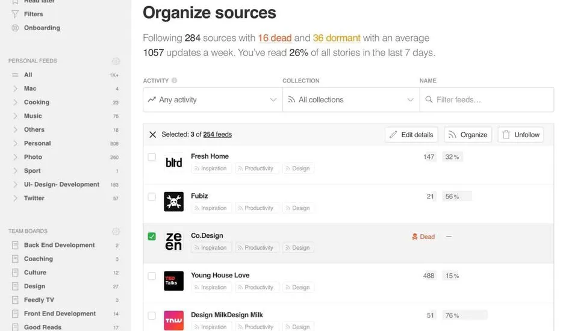

Veille informatique
QU'EST-CE-QU'UNE VEILLE ?
Une veille est une activité consistant à rester au courant des dernières avancées et informations sur un secteur donné. Dans le cadre d'une veille informatique il s'agit alors de s'informer quotidiennement sur le monde le "TECH" de manière globale
Comment réaliser une veille
Pour effectuer ma veille technologique, j’utilise « feedly », qui est un agrégateur d’actualités, qui me permet d’être toujours au courant de toutes les actualités que je souhaite. Par exemple, j’ai mis en place tous les sites d’actualités tech et cybersécurité. J’ai ajouté différentes sources telles que : ANSSI, Videocardz, Techpowerup, Arstechnica, Tomshardware, …
Les différents outils que j’ai utilisé
Smartphones PC Laptop
Les différents médias que j’ai utilisés
social media Flux RSS Newsletters Webinar
En plus d’avoir un système automatisé pour rester à jour que je lis quotidiennement (souvent pendant les temps morts), parfois vous restez à jour inconsciemment. Voyons quelques exemples : Généralement quand je cherche une solution à un problème. Je suis quelqu’un qui peut innocemment rechercher sur Google quelque chose lié au travail, et quelques heures plus tard, j’ai 15 onglets ouverts avec diverses choses qui ne sont que vaguement liées à ce que j’ai recherché à l’origine. Cela finit inévitablement par me faire tomber sur de nouvelles technologies. En regardant les descriptions de poste envoyées par les recruteurs, puis en recherchant sur Google tout ce qui ne vous semble pas familier.